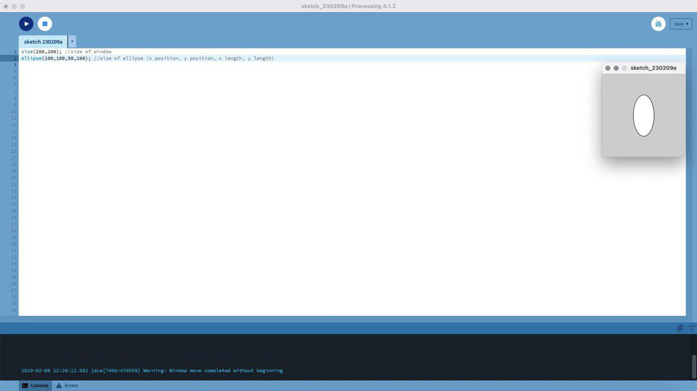
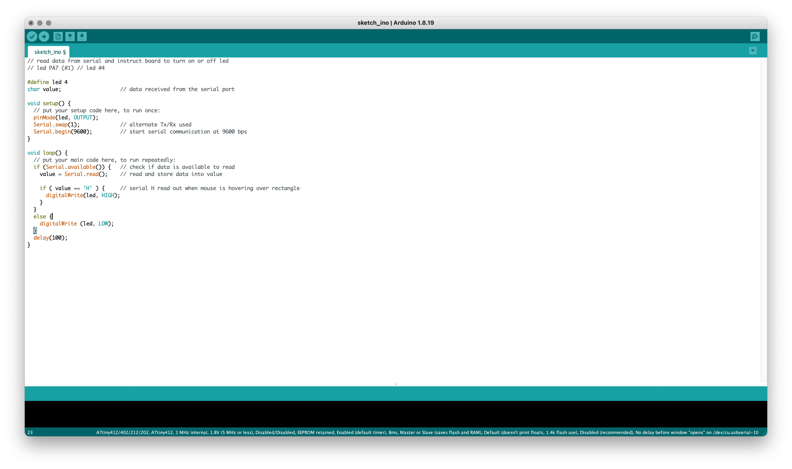
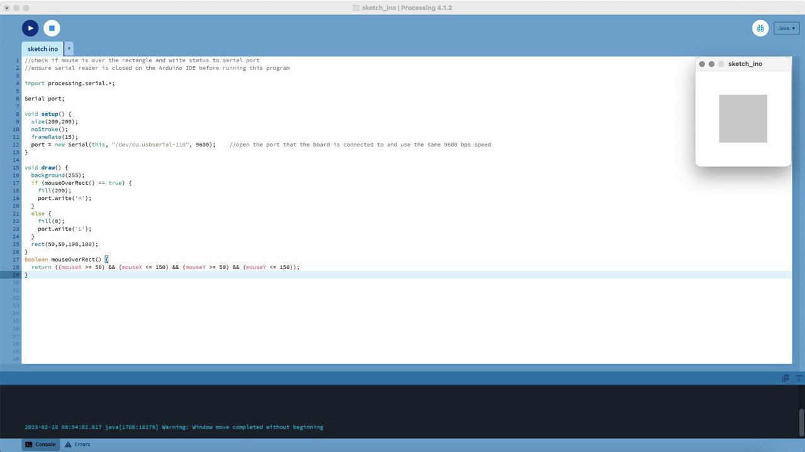

Continuation from Embedded Programming
We will explore how to use our echo hello-world board to interact and send data to a software serial. This builds on what we learned from Embedded Programming.
Assignments
- To write an application that interfaces a user with an input &/or output device that you made.
Before we can begin, we will need to first download the Processing application.
The first program we will write is to sketch up an ellipse within a specified window size:
With this basic skill, we will then combine both Arduino and Processing to make a box light up our echo hello-world board led when our mouse cursor hovering is hovering over it. We will start by installing the necessary Arduino library into Processing.
After installing the library, we can begin to code into Arduino and Processing:
|  |  |
Now we can test and check that the led do turn on when we hover our mouse cursor over the rectangle we sketched in Processing.